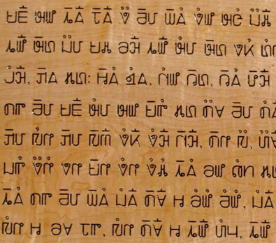
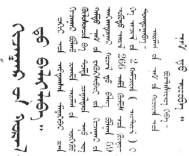

Asia
Home
Korean newspaper written in Hanja
(logograms) and Hangul (graphemes)

Wood engraving written with the Pahawh
Hmong script

Buryat newspaper written with the
(traditional) Mongolian script
Asian abjads
Proto-Sinaitic
Arabic
Hebrew
Asian abugidas
Brahmi
Devanagari
Tibetan
Kharoṣṭhī
Asian alphabets
Hangul
Ol Chiki
Asian logographies
Chinese
Dongba
Asian semisyllabaries
Pahawh Hmong
Asian syllabaries
Geba
Kana
Other Asian scripts
Indus script
Jiahu symbols
Citations
Images (left to right)
https://en.wikipedia.org/wiki/Korean_mixed_script
https://upload.wikimedia.org/wikipedia/commons/4/4e/Wood_Carving_Pahawh.jpg
https://upload.wikimedia.org/wikipedia/commons/e/ea/Buriad-mongoliin-ynen-1931-02-04.jpg